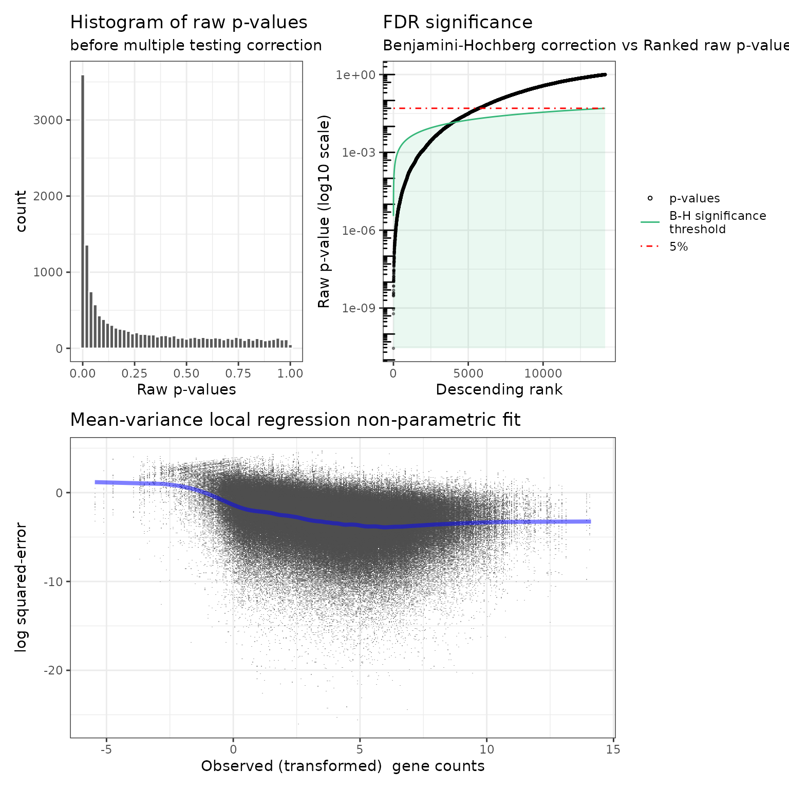
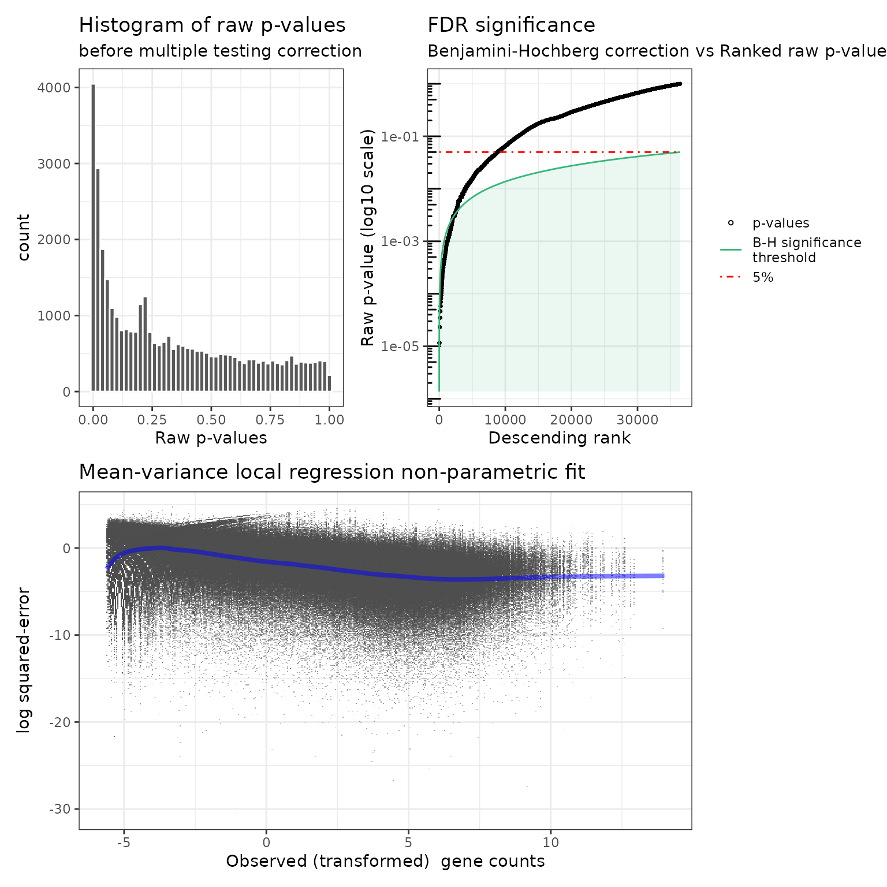
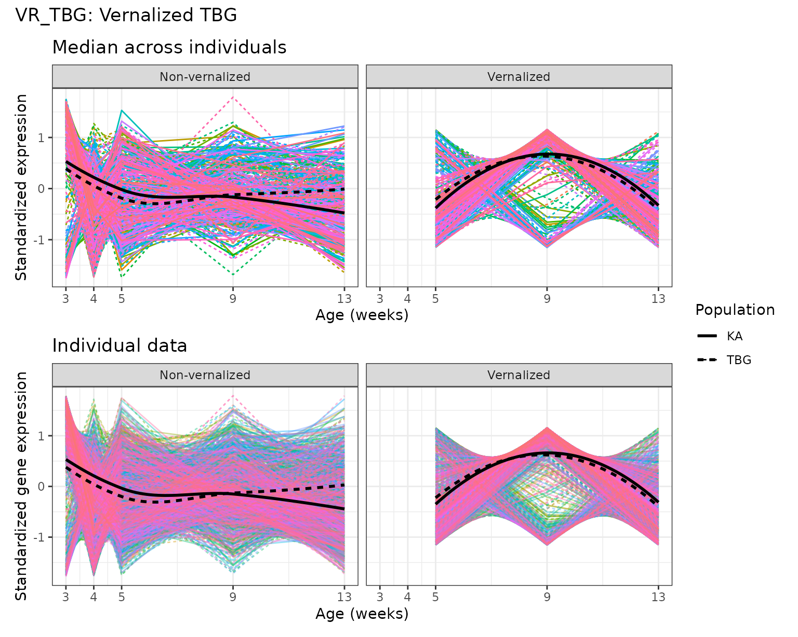

User guide to the `dearseq` R package
Marine Gauthier, Denis Agniel, Boris Hejblum
2025-04-10
Source:vignettes/dearseqUserguide.Rmd
dearseqUserguide.Rmd
Overview of dearseq
dearseq is an R package that performs
Differential Expression
Analysis of RNA-seq
data, while guaranteeing a sound control of false positives
(Gauthier et al., 2019). It relies on variance component score
test accounting for data heteroscedasticity through precision weights,
not unlike voom (Law et al., 2014). It can perform
either
- gene-wise differential analysis, or
- gene set analysis
In addition, dearseq can deal with various and complex
experimental designs such as:
- multiple biological conditions,
- repeated or longitudinal measurements
More details are provided Gauthier M, Agniel D, Thiébaut R &
Hejblum BP (2020). dearseq: a variance component score test for RNA-Seq
differential analysis that effectively controls the false discovery
rate, NAR Genomics and Bioinformatics, 2(4):lqaa093.
DOI:
10.1093/nargab/lqaa093
Using dearseq for a gene-wise analysis
Getting started using dear_seq()
Two inputs are required to run dear_seq():
- The gene expression matrix
- The data.frame containing the variables of interested to be tested (e.g. the group factor)
Both can be supplied in the formed of a
SummarizedExperiment object for instance. A third optional
input is the covariates that will be adjusted on (such as age for
instance).
An example analysis
Tuberculosis (TB) is a disease caused by a bacterium called Mycobacterium tuberculosis. Bacteria typically infect the lungs, but they can also affect other parts of the body. Tuberculosis can remain in a quiescent state in the body. It is called latent tuberculosis infection (LTBI). It is an infection without clinical signs, bacteriological and radiological disease.
Berry et al. first identified a whole blood 393 transcript signature for active TB using microarray analysis. Then, Singhania et al. found a 373-genes signature of active tuberculosis using RNA-Seq, confirming microarray results, that discriminates active tuberculosis from latently infected and healthy individuals.
We sought to investigate how many of the 373 genes Singhania et al. found using edgeR might actually be false positives. As a quick example, we propose a partial re-analysis (see Gauthier et al. for the complete analysis) of the Singhania et al. dataset: we proceed to the Differential Expression Analysis (DEA) of the Active TB group against the Control one, omitting LTBI/Control and ActiveTB/LTBI comparisons. We focused on the Berry London dataset.
It results in 54 patients of whom 21 are active TB patients, 21 are latent TB patients and 12 are healthy control particiants.
For more details, check the article from Berry et al., 2010 here.
Data preparation
Data from Singhania et al. inverstigating active TB are
publicly available on GEO
website with GEO access number ‘GSE107995’. Thanks to the
GEOquery package to get the data files from GEO website
(see appendix for more details on GEOquery)
Design data matrix
library(GEOquery)
GSE107991_metadata <- GEOquery::getGEO("GSE107991", GSEMatrix = FALSE)
get_info <- function(i) {
name <- GEOquery::Meta(GSMList(GSE107991_metadata)[[i]])$source_name_ch1
name <- gsub("Active_TB", "ActiveTB", name)
name <- gsub("Test_set", "TestSet", name)
c(unlist(strsplit(name, split = "_")), GEOquery::Meta(GSMList(GSE107991_metadata)[[i]])$title)
}
infos <- vapply(X = 1:length(GSMList(GSE107991_metadata)), FUN = get_info, FUN.VALUE = c("a",
"b", "c", "d", "e"))
infos_df <- cbind.data.frame(SampleID = names(GSMList(GSE107991_metadata)), t(infos),
stringsAsFactors = TRUE)
rownames(infos_df) <- names(GEOquery::GSMList(GSE107991_metadata))
colnames(infos_df)[-1] <- c("Cohort", "Location", "Set", "Status", "SampleTitle")Gene expression matrix
This matrix contains the gene expression (in cells) for each gene (in rows) of each sample (in columns) gathered from RNA-seq measurements. The gene expression could already be normalized, or not (e.g. raw counts or pseudo-counts straight from the alignment). In the latter case, the gene expression is normalized then into log(counts) per million (i.e. log-cpm).
The gene expression matrix (called London) is including
in the package dearseq. It was extracted from one of the
GEO supplementary files (namely the
“GSE107991_edgeR_normalized_Berry_London.xlsx” file).
NB: These expression data have already been already
normalized using edgeR
library(readxl)
GEOquery::getGEOSuppFiles("GSE107991", filter_regex = "edgeR_normalized_Berry_London")
London <- readxl::read_excel("GSE107991/GSE107991_edgeR_normalized_Berry_London.xlsx")
genes <- London$Genes
London <- as.matrix(London[, -c(1:3)])
rownames(London) <- genesWe have nrow(London) genes in rows and
ncol(London) samples in columns * rownames are Ensembl IDs
ENSGxxxxxxxxxxx for each gene (saved in genes)
* colnames are the name of each sample Berry_London_Samplex
* each data-cell contains the normalized gene expression
The vector genes contains all the gene identifiers.
Identifying differentially expressed genes (DEG) from
dearseq variance component score test
The main arguments to the dear_seq() function are:
-
exprmat: a numeric matrix containing the raw RNA-seq counts or preprocessed expressions -
covariates: a numeric matrix containing the model covariates that needs to be adjusted. Usually, its first column is the intercept (full of 1s). -
variables2test: a numeric design matrix containing the variables of interest (with whom the expression association is tested) -
which_test: a character string indicating which method to use to approximate the variance component score test, either “permutation” or “asymptotic”. -
preprocessed: a logical flag indicating whether the expression data have already been preprocessed (e.g. log2 transformed). Default is FALSE, in which case y is assumed to contain raw counts and is normalized into log(counts) per million.
We use the permutation test because of the relatively small sample size ().
library(dearseq)
library(SummarizedExperiment)
col_data <- data.frame(Status = infos_df$Status)
col_data$Status <- stats::relevel(col_data$Status, ref = "Control")
rownames(col_data) <- infos_df$SampleTitle
se <- SummarizedExperiment(assays = London, colData = col_data)
res_dearseq <- dearseq::dear_seq(object = se[, se$Status != "LTBI"], variables2test = "Status",
which_test = "asymptotic", preprocessed = TRUE)
summary(res_dearseq)
#> dearseq identifies 3945 significant genes out of 14150
#> - test: asymptotic
#> - FDR significance level: 0.05
plot(res_dearseq)
res_dearseq is a list containing:
- the input values for
which_test,npermandpreprocessed - the gene-wise p-values (raw and adjusted - default is correction for multiple testing with the Benjamini-Hochberg procedure)
NB: We excluded the LTBI patients to focus on the comparison between Active TB versus Control patients.
Using gene expression matrix of raw counts
If the gene expression could not already be normalized, the gene
expression is normalized then into log(counts) per million
(i.e. log-cpm). We set preprocessed equal to
FALSE, the default parameter to normalize the raw counts.
The matrix of raw counts (Raw_counts_Berry_London) contains
genes and
samples. As described in Singhania et al., only genes expressed
with counts per million (CPM)
in at least five samples were considered. The filtering is carried out
with edgeR. It results in a matrix of raw counts containing
genes and
samples (London_raw). Of note, many filtering and normalization methods
may be considered and the user must be cautious applying them.
library(readxl)
library(edgeR)
GEOquery::getGEOSuppFiles("GSE107991", filter_regex = "Raw_counts_Berry_London")
London_raw <- readxl::read_excel("GSE107991/GSE107991_Raw_counts_Berry_London.xlsx")
genes_raw <- London_raw$Genes
London_raw <- as.matrix(London_raw[, -c(1:3)])
se_raw <- SummarizedExperiment(assays = London_raw, colData = col_data)
group <- ifelse(se_raw$Status == "ActiveTB", 1, 0)
dgList <- DGEList(counts = London_raw, group = group)
cpm <- cpm(dgList)
countCheck <- cpm > 2
keep <- which(rowSums(countCheck) >= 5)
London_raw <- London_raw[keep, ]
res_dearseq <- dearseq::dear_seq(object = se_raw[, se_raw$Status != "LTBI"], variables2test = "Status",
which_test = "permutation", preprocessed = FALSE, parallel_comp = interactive())
summary(res_dearseq)
plot(res_dearseq)
Using dearseq for gene-set analysis
Here we will use a subsample of the RNA-seq data from Baduel et
al. (2016) studying Arabidopsis Arenosa physiology, that is
included in the dearseq package.
We investigates 2 gene sets that were derived in a data-driven manner By Baduel et al. (2016).
library(dearseq)
library(SummarizedExperiment)
library(BiocSet)
data("baduel_5gs")
se2 <- SummarizedExperiment(assay = log2(expr_norm_corr + 1), colData = design)
genes_non0var_ind <- which(matrixStats::rowVars(expr_norm_corr) != 0)
KAvsTBG <- dearseq::dgsa_seq(object = se2[genes_non0var_ind, ], covariates = c("Vernalized",
"AgeWeeks", "Vernalized_Population", "AgeWeeks_Population"), variables2test = "PopulationKA",
genesets = baduel_gmt$genesets[c(3, 5)], which_test = "permutation", which_weights = "loclin",
n_perm = 2000, preprocessed = TRUE, verbose = FALSE, parallel_comp = interactive())
summary(KAvsTBG)
#> dearseq identifies 1 significant gene sets out of 2
#> - test: permutation
#> - FDR significance level: 0.05
KAvsTBG$pvals
#> rawPval adjPval
#> VR_TBG 0.931534233 0.9315342
#> DE_KAvsTBG 0.007496252 0.0149925
Cold <- dearseq::dgsa_seq(object = se2[genes_non0var_ind, ], covariates = c("AgeWeeks",
"PopulationKA", "AgeWeeks_Population"), variables2test = c("Vernalized", "Vernalized_Population"),
genesets = baduel_gmt$genesets[c(3, 5)], which_test = "permutation", which_weights = "loclin",
n_perm = 2000, preprocessed = TRUE, verbose = FALSE, parallel_comp = interactive())
summary(Cold)
#> dearseq identifies 2 significant gene sets out of 2
#> - test: permutation
#> - FDR significance level: 0.05
Cold$pvals
#> rawPval adjPval
#> VR_TBG 0.02148926 0.03848076
#> DE_KAvsTBG 0.03848076 0.03848076We can also visualize the (pseudo-)longitudinal expression within a gene set:
#Remove "non-vernalized" samples
colData(se2)[["Indiv"]] <- colData(se2)[["Population"]]:colData(se2)[["Replicate"]]
colData(se2)[["Vern"]] <- ifelse(colData(se2)[["Vernalized"]], "Vernalized", "Non-vernalized")
library(ggplot2)
library(patchwork)
spaghettiPlot1GS(gs_index = 3, gmt = baduel_gmt, expr_mat = assay(se2),
design = colData(se2), var_time = AgeWeeks, var_indiv = Indiv,
sampleIdColname = "sample", var_group=Vern, var_subgroup=Population, loess_span = 1.5) &
ggplot2::xlab("Age (weeks)") & #changing the label of the x axis
guides(color= "none") # removing the color legend for genes because there are too many
Bibliography
Agniel D & Hejblum BP (2017). Variance component score test for time-course gene set analysis of longitudinal RNA-seq data. Biostatistics 18(4):589-604. DOI: 10.1093/biostatistics/kxx005.
Baduel P, Arnold B, Weisman CM, Hunter B & Bomblies K (2016). Habitat-Associated Life History and Stress-Tolerance Variation in Arabidopsis Arenosa. Plant Physiology, 171(1):437-51. DOI: 10.1104/pp.15.01875.
Berry MP, Graham CM, McNab FW, Xu Z, Bloch SAA, Oni T, Wilkinson KA, Banchereau R, Skinner J, Wilkinson RJ, Quinn C, Blankenship D, Dhawan R, Cush JJ, Mejias A, Ramilo O, Kon OM, Pascual V, Banchereau J, Chaussabel D & O’Garra A (2010). An interferon-inducible neutrophil-driven blood transcriptional signature in human tuberculosis. Nature 466:973–977. DOI: 10.1038/nature09247
Gauthier M, Agniel D, Thiébaut R & Hejblum BP (2020). dearseq: a variance component score test for RNA-Seq differential analysis that effectively controls the false discovery rate. NAR Genomics and Bioinformatics, 2(4):lqaa093. DOI: 10.1093/nargab/lqaa093
Singhania A, Verma R, Graham CM, Lee J, Tran T, Richardson M, Lecine P, Leissner P, Berry MPR, Wilkinson RJ, Kaiser K, Rodrigue M, Woltmann G, Haldar P, O’Garra A, (2018). A modular transcriptional signature identifies phenotypic heterogeneity of human tuberculosis infection. Nature communications 9(1):2308. DOI: 10.1038/s41467-018-04579-w
Appendix
GEOquery package
In case the data you want to analyze is publicly available through Gene Expression Omnibus
(GEO), you can access it with the GEOquery package,
that can be installed with the following commands:
if (!requireNamespace("GEOquery", quietly = TRUE)) {
if (!requireNamespace("BiocManager", quietly = TRUE)) {
install.packages("BiocManager")
}
BiocManager::install("GEOquery")
}
readxl
The readxl package allows to easily imports data from
Excel format and can be similarly installed with the following
commands:
if (!requireNamespace("readxl", quietly = TRUE)) {
install.packages("readxl")
}More details can be found on Bioconductor and in Davis S, Meltzer P, (2007) GEOquery: a bridge between the Gene Expression Omnibus (GEO) and Bioconductor Bioinformatics 14:1846-1847.
Session Info
#> R version 4.4.3 (2025-02-28)
#> Platform: x86_64-pc-linux-gnu
#> Running under: Ubuntu 24.04.2 LTS
#>
#> Matrix products: default
#> BLAS: /usr/lib/x86_64-linux-gnu/openblas-pthread/libblas.so.3
#> LAPACK: /usr/lib/x86_64-linux-gnu/openblas-pthread/libopenblasp-r0.3.26.so; LAPACK version 3.12.0
#>
#> locale:
#> [1] LC_CTYPE=C.UTF-8 LC_NUMERIC=C LC_TIME=C.UTF-8
#> [4] LC_COLLATE=C.UTF-8 LC_MONETARY=C.UTF-8 LC_MESSAGES=C.UTF-8
#> [7] LC_PAPER=C.UTF-8 LC_NAME=C LC_ADDRESS=C
#> [10] LC_TELEPHONE=C LC_MEASUREMENT=C.UTF-8 LC_IDENTIFICATION=C
#>
#> time zone: UTC
#> tzcode source: system (glibc)
#>
#> attached base packages:
#> [1] stats4 stats graphics grDevices utils datasets methods
#> [8] base
#>
#> other attached packages:
#> [1] patchwork_1.3.0 ggplot2_3.5.2
#> [3] BiocSet_1.20.0 dplyr_1.1.4
#> [5] edgeR_4.4.2 limma_3.62.2
#> [7] SummarizedExperiment_1.36.0 GenomicRanges_1.58.0
#> [9] GenomeInfoDb_1.42.3 IRanges_2.40.1
#> [11] S4Vectors_0.44.0 MatrixGenerics_1.18.1
#> [13] matrixStats_1.5.0 dearseq_1.13.6
#> [15] readxl_1.4.5 GEOquery_2.74.0
#> [17] Biobase_2.66.0 BiocGenerics_0.52.0
#>
#> loaded via a namespace (and not attached):
#> [1] DBI_1.2.3 pbapply_1.7-2 httr2_1.1.2
#> [4] formatR_1.14 rlang_1.1.5 magrittr_2.0.3
#> [7] RSQLite_2.3.9 compiler_4.4.3 mgcv_1.9-1
#> [10] png_0.1-8 systemfonts_1.2.2 vctrs_0.6.5
#> [13] reshape2_1.4.4 stringr_1.5.1 pkgconfig_2.0.3
#> [16] crayon_1.5.3 fastmap_1.2.0 XVector_0.46.0
#> [19] labeling_0.4.3 rmarkdown_2.29 tzdb_0.5.0
#> [22] UCSC.utils_1.2.0 ragg_1.3.3 bit_4.6.0
#> [25] purrr_1.0.4 xfun_0.52 zlibbioc_1.52.0
#> [28] cachem_1.1.0 jsonlite_2.0.0 blob_1.2.4
#> [31] DelayedArray_0.32.0 parallel_4.4.3 R6_2.6.1
#> [34] bslib_0.9.0 stringi_1.8.7 jquerylib_0.1.4
#> [37] scattermore_1.2 cellranger_1.1.0 Rcpp_1.0.14
#> [40] knitr_1.50 R.utils_2.13.0 readr_2.1.5
#> [43] rentrez_1.2.3 Matrix_1.7-2 splines_4.4.3
#> [46] tidyselect_1.2.1 abind_1.4-8 yaml_2.3.10
#> [49] curl_6.2.2 lattice_0.22-6 tibble_3.2.1
#> [52] plyr_1.8.9 KEGGREST_1.46.0 withr_3.0.2
#> [55] evaluate_1.0.3 ontologyIndex_2.12 desc_1.4.3
#> [58] survival_3.8-3 CompQuadForm_1.4.3 survey_4.4-2
#> [61] xml2_1.3.8 Biostrings_2.74.1 RcppEigen_0.3.4.0.2
#> [64] pillar_1.10.2 KernSmooth_2.23-26 generics_0.1.3
#> [67] hms_1.1.3 munsell_0.5.1 scales_1.3.0
#> [70] glue_1.8.0 tools_4.4.3 BiocIO_1.16.0
#> [73] data.table_1.17.0 locfit_1.5-9.12 fs_1.6.5
#> [76] XML_3.99-0.18 grid_4.4.3 tidyr_1.3.1
#> [79] mitools_2.4 AnnotationDbi_1.68.0 colorspace_2.1-1
#> [82] nlme_3.1-167 GenomeInfoDbData_1.2.13 cli_3.6.4
#> [85] rappdirs_0.3.3 textshaping_1.0.0 S4Arrays_1.6.0
#> [88] viridisLite_0.4.2 gtable_0.3.6 R.methodsS3_1.8.2
#> [91] sass_0.4.9 digest_0.6.37 SparseArray_1.6.2
#> [94] farver_2.1.2 memoise_2.0.1 htmltools_0.5.8.1
#> [97] pkgdown_2.1.1 R.oo_1.27.0 lifecycle_1.0.4
#> [100] httr_1.4.7 statmod_1.5.0 bit64_4.6.0-1